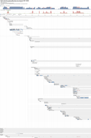

BootChart
Dieser Artikel wurde für die folgenden Ubuntu-Versionen getestet:
Ubuntu 14.04 Trusty Tahr
Zum Verständnis dieses Artikels sind folgende Seiten hilfreich:
BootChart  ist ein Programm zum Visualisieren des Boot-Vorganges von Linux. Es erzeugt eine Grafik im PNG-Format, in der einzelne Prozesse während des Bootens dargestellt werden, inklusive der CPU-Auslastung und der Zeit, die sie benötigt haben. Außerdem wird die Gesamtdauer des Bootens angezeigt.
ist ein Programm zum Visualisieren des Boot-Vorganges von Linux. Es erzeugt eine Grafik im PNG-Format, in der einzelne Prozesse während des Bootens dargestellt werden, inklusive der CPU-Auslastung und der Zeit, die sie benötigt haben. Außerdem wird die Gesamtdauer des Bootens angezeigt.
Ab Ubuntu 15.04 kommt systemd als Init-System zum Einsatz. Um hier eine BootChart-ähnliche Grafik zu erstellen, verwendet man folgenden Befehl:
systemd-analyze plot > bootchart.svg
Oder:
systemd-bootchart -o bootchart.svg
Installation¶
BootChart kann über das folgende Paket aus den offiziellen Paketquellen installiert werden [1]:
bootchart (universe)
 mit apturl
mit apturl
Paketliste zum Kopieren:
sudo apt-get install bootchart
sudo aptitude install bootchart
Benutzung¶
|  |
| Beispielgrafik |
Gleich nach der Installation ist BootChart einsatzbereit und erstellt von nun an grafische Übersichten des Bootvorgangs. Diese werden als PNG-Bilder im Ordner /var/log/bootchart/ gespeichert.
Problembehebung¶
Die BootChart-Version von Ubuntu ist reduziert auf das Protokollieren und Auswerten des Bootvorganges. Das originale BootChart, das auf der offiziellen Projektseite heruntergeladen werden kann, ermöglicht zusätzlich das Exportieren der Logs nicht nur im PNG-, sondern auch im SVG- und EPS-Format. Außerdem kann man mit der vollständigen Version auch normale Nutzer-Prozesse loggen. Zum Auswerten des Bootvorganges ist die Version in Ubuntu jedoch vollkommen ausreichend.
- Erstellt mit Inyoka
-
 2004 – 2017 ubuntuusers.de • Einige Rechte vorbehalten
2004 – 2017 ubuntuusers.de • Einige Rechte vorbehalten
Lizenz • Kontakt • Datenschutz • Impressum • Serverstatus -
Serverhousing gespendet von